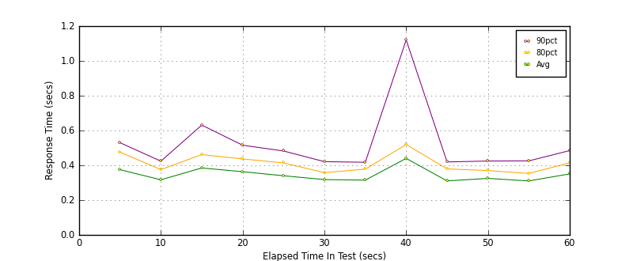
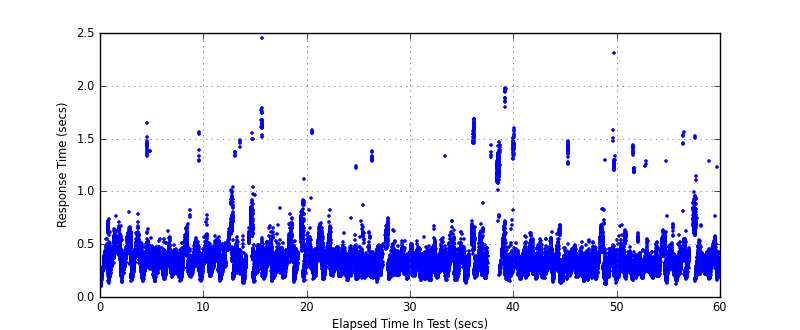
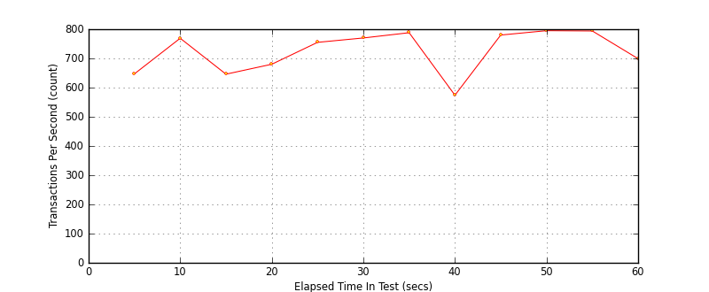

Performance Results Report
Summary
transactions: 43757
errors: 0
run time: 60 secs
rampup: 0 secs
test start: 2017-05-24 19:02:25
test finish: 2017-05-24 19:03:25
time-series interval: 5 secs
workload configuration:
| group name | threads | script name |
|---|
| user_group-21 | 10 | redis_stress.py |
| user_group-20 | 10 | redis_stress.py |
| user_group-23 | 10 | redis_stress.py |
| user_group-22 | 10 | redis_stress.py |
| user_group-25 | 10 | redis_stress.py |
| user_group-24 | 10 | redis_stress.py |
| user_group-2 | 10 | redis_stress.py |
| user_group-3 | 10 | redis_stress.py |
| user_group-1 | 10 | redis_stress.py |
| user_group-6 | 10 | redis_stress.py |
| user_group-7 | 10 | redis_stress.py |
| user_group-4 | 10 | redis_stress.py |
| user_group-5 | 10 | redis_stress.py |
| user_group-8 | 10 | redis_stress.py |
| user_group-9 | 10 | redis_stress.py |
| user_group-10 | 10 | redis_stress.py |
| user_group-11 | 10 | redis_stress.py |
| user_group-12 | 10 | redis_stress.py |
| user_group-13 | 10 | redis_stress.py |
| user_group-14 | 10 | redis_stress.py |
| user_group-15 | 10 | redis_stress.py |
| user_group-16 | 10 | redis_stress.py |
| user_group-17 | 10 | redis_stress.py |
| user_group-18 | 10 | redis_stress.py |
| user_group-19 | 10 | redis_stress.py |
All Transactions
Transaction Response Summary (secs)
| count | min | avg | 80pct | 90pct | 95pct | max | stdev |
|---|
| 43757 | 0.100 | 0.342 | 0.403 | 0.475 | 0.561 | 2.451 | 0.152 |
Interval Details (secs)
| interval | count | rate | min | avg | 80pct | 90pct | 95pct | max | stdev |
|---|
| 1 | 3236 | 647.20 | 0.100 | 0.375 | 0.476 | 0.530 | 0.569 | 1.643 | 0.137 |
| 2 | 3846 | 769.20 | 0.143 | 0.317 | 0.375 | 0.424 | 0.472 | 1.554 | 0.092 |
| 3 | 3231 | 646.20 | 0.129 | 0.385 | 0.462 | 0.631 | 0.727 | 1.547 | 0.164 |
| 4 | 3403 | 680.60 | 0.141 | 0.363 | 0.437 | 0.515 | 0.599 | 2.451 | 0.163 |
| 5 | 3775 | 755.00 | 0.156 | 0.340 | 0.414 | 0.482 | 0.532 | 1.580 | 0.109 |
| 6 | 3854 | 770.80 | 0.141 | 0.318 | 0.358 | 0.421 | 0.562 | 1.374 | 0.111 |
| 7 | 3940 | 788.00 | 0.152 | 0.315 | 0.378 | 0.417 | 0.449 | 1.328 | 0.078 |
| 8 | 2871 | 574.20 | 0.124 | 0.440 | 0.520 | 1.120 | 1.266 | 1.971 | 0.333 |
| 9 | 3902 | 780.40 | 0.129 | 0.310 | 0.379 | 0.419 | 0.449 | 1.517 | 0.086 |
| 10 | 3979 | 795.80 | 0.118 | 0.325 | 0.370 | 0.425 | 0.503 | 2.305 | 0.149 |
| 11 | 3973 | 794.60 | 0.129 | 0.310 | 0.353 | 0.425 | 0.490 | 1.435 | 0.117 |
| 12 | 3497 | 699.40 | 0.121 | 0.351 | 0.414 | 0.485 | 0.680 | 1.562 | 0.144 |
Graphs
Response Time: 5 sec time-series

Response Time: raw data (all points)

Throughput: 5 sec time-series
